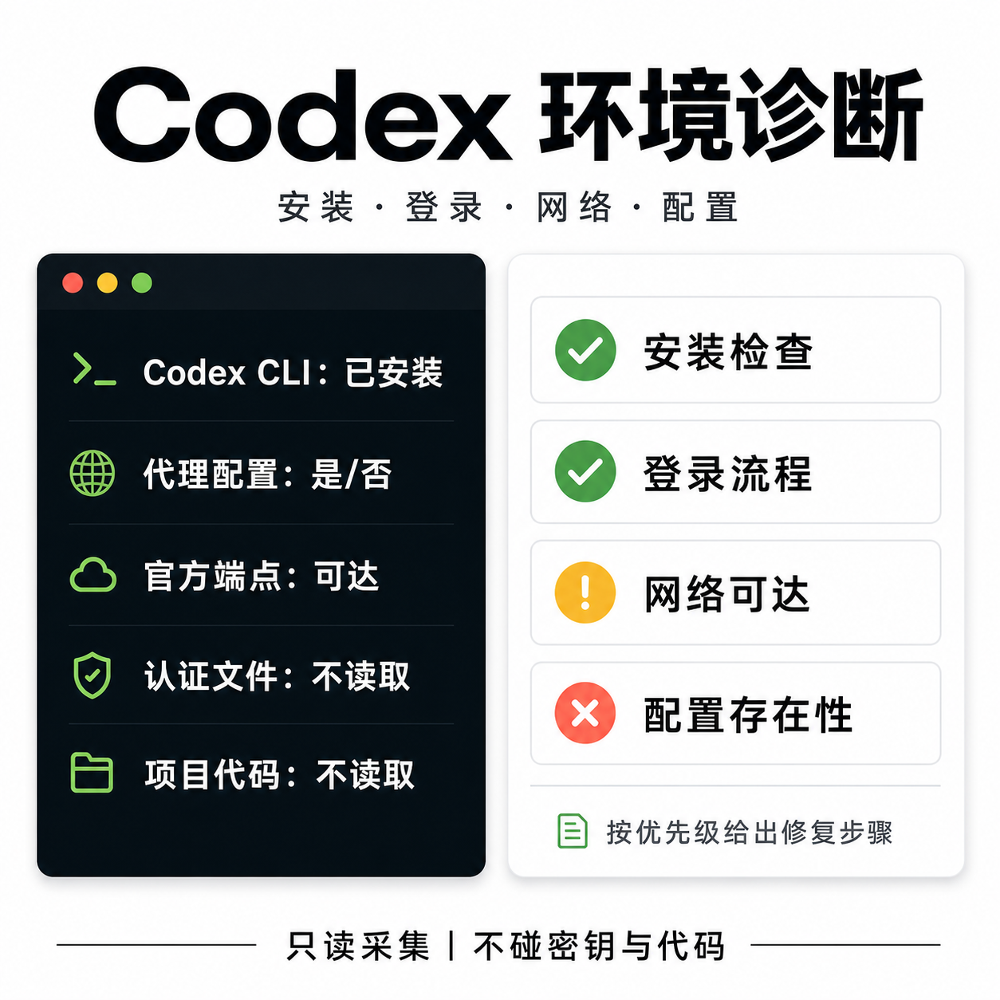

Install
codex is not found, the CLI version is unexpected, or PATH and install location are unclear.
MIT-licensed read-only diagnostic collector
A small collector for Codex CLI install, login, proxy, custom CA, CODEX_HOME, and connectivity problems. It reports versions and presence signals without reading secrets, auth files, source code, logs, usernames, hostnames, working directories, or proxy addresses.

codex is not found, the CLI version is unexpected, or PATH and install location are unclear.
Browser login does not return to the CLI, or a remote, WSL2, SSH, or headless environment needs a safer first check.
Proxy, custom CA, TLS interception, sandboxed networking, or official endpoint reachability may be involved.
auth.json, full logs, source code, full config files, identity documents, or screenshots containing account details into public issues.
The collector is free. The paid offer is a written diagnosis from a manually reviewed, redacted report, with prioritized fix steps and one follow-up. The payment link will be added after the creator/payment account is published. Until then, do not send diagnostic reports through GitHub issues.